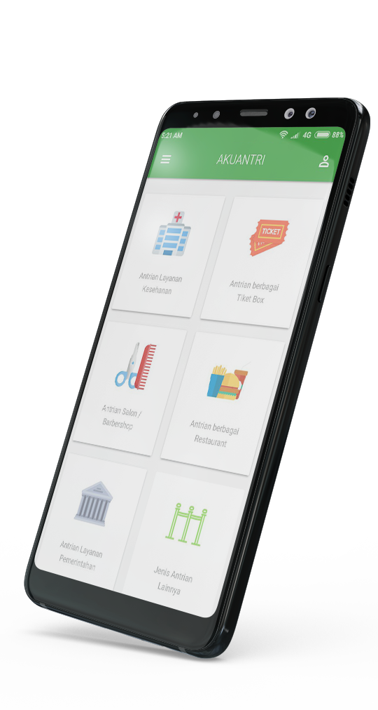

Akuantri Indonesia
Kami sadar menunggu adalah hal yang membosankan, dan kami juga sadar akan ada banyak waktu terbuang
begitu saja karna harus menunggu. Untuk itu, Akuantri hadir untuk membuat waktu berharga Anda
tidak hilang begitu saja. Kami akan menggantikan antrian Anda, karna kami sadar bahwa
Waktu Anda sangat Berharga.
Berbagai Jenis Antrian
Jangan habiskan waktu Anda hanya untuk mengantri
Layanan Kesehatan
Antri di Rumah Sakit, Klinik, dan Layanan kesehatan lain kini bisa lebih menyenangkan.
Berbagai Tiket Box
Tidak takut lagi kehabisan Tiket atau Diskon menarik dengan layanan Akuantri.
Berbagai Restaurant
Jangan lewatkan Diskon atau Opening Restaurant kesuakaan Anda, Kami yang akan Antri.
Salon atau Barbershop
Kami yang akan menunggu giliran Anda di Salon atau Barbershop Kesayangan Anda.
Layanan Pemerintahan atau Bank
Tidak bisa datang pagi untuk Antri? Kami yang akan menggantikan Antrian Anda.
Jenis Antrian Lain
Antrian tidak masuk kategori? Ceritakan tentang jenis Antrian Anda kepada kami.

Frequently Ask Questions
Pertanyaan yang Sering ditanyakan Tentang Akuantri.
Apa & siapa itu Liner Akuantri?
Mitra akuantri yang ada di lapangan untuk mengantri/mengantikan posisi antrian Anda.
Jasa apa saja yang diberikan Akuantri
Jasa Layanan Tunggu dan Antrian diantaranya sebagai berikut :
- Jasa Antri di restaurant meliputi layanan tunggu pada antrian panjang atau lama, layanan pemesanan Table.
- Antrian dilokasi-lokasi layanan kesehatan seperti Klinik, Rumah Sakit, Rumah Rumah Sakit Bersalin, Bersalin, Tempat
Terapi Kesehatan dan sebagainya.
- Antrian pada tempat-tempat atau acara hiburan seperti diloket pembelian tiket bioskop, tiket konser, tiket travel fair
dan sebagainya.
- Antrian lama di layanan kecantikan seperti Salon ataupun Barbershop.
- Antrian pada Customer Service Perbankan.
- Antrian ditempat kepengurusan Pajak Kendaraan juga instansi sejenis lainnya.
Bagaimana cara pemesanan Liner Akuantri?
Sangat mudah, silahkan Download Aplikasi Akuantri di Google Play. Setelah itu klik Icon Antrian apa yang Anda butuhkan, isi data seperti lokasi antrian, kapan tanggal akan dilakukan antrian, Jam untuk mulai mengantri, pesan tambahan atau
informasi tambahan tentang antrian Anda.
Catetan : Pemesanan Minimal 7 jam sebelum waktu antrian
Konfirmasi pembayaran hanya dilakukan pada jam kerja Akuantri (09.00 - 17.00)
Bagaimana cara membayar layanan Akuantri?
Setelah Anda berhasil melakukan Pesanan Antrian maka Anda akan menerima Email yang menjelaskan bagaimana cara pembayaran dan jumlah yang harus dibayar sesuai dengan estimasi Antrian yang Anda pesan. Jika waktu Antrian melebihi estimasi Antrian yang Anda pesan, maka akan berlaku tarif dasar dan pembayaran dilakukan secara langsung kepada Liner yang bertugas.
Berapa tarif dasar layanan Akuantri?
Tarif dasar Layanan Kami adalah Rp. 2500 untuk setiap 5 Menit.
Untuk pemesanan durasi antrian 3 Jam atau lebih, maka tarif dasar kami adalah 50% dari total estimasi harga durasi
antrian yang Anda pesan.
Berapa jumlah Liner yg dapat dipesan?
1 Order via Aplikasi bisa melakukan pemesanan untuk lebih dari 1 Liner, dengan ketentuan 1 Liner hanya dapat melayani 1 Pelanggan atau 1 Antrian.
Testimonial
Mereka yang telah menghemat waktunya untuk mengantri.
Hemat Waktu Anda
Bebaskan dan hemat waktu Anda untuk Antri, Kami yang akan menggantikan posisi Antrian panjang Anda.
Pesan Antrian Kapan Saja
Silahkan pesan Antrian untuk sekarang , Besok, Minggu depan, kapan Saja. Liner kami akan siap Antri untuk Anda.
Berbagai Jenis Antrian
Beragam jenis Antrian tinggal pesan seperti Antri BPJS, Imigrasi, Pembayaran pajak, dan Antrian lainya.